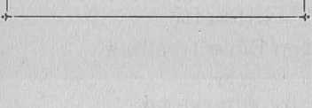
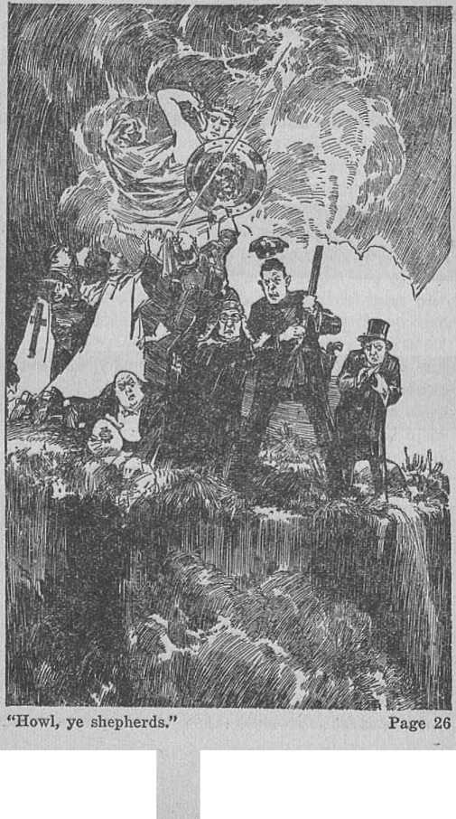
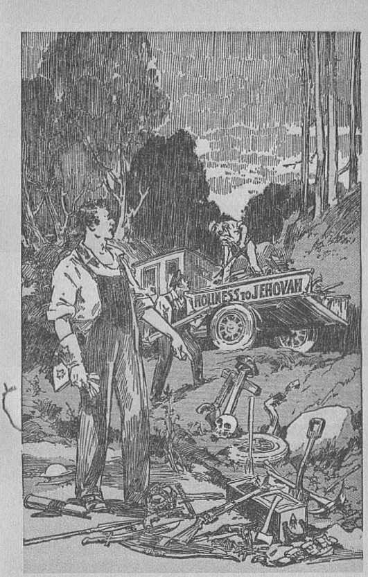

explained in Seven Bible Treatises by
J. F. RUTHERFORD
Page
3 Jehovah’s Vengeance
11 Jehovah’s Sword
20 Turning the Tables
29 Abominations
37 Reprehensible
49 Gog and Magog
55 Time of Trouble
The day to declare the vengeance of Jehovah God is here! His vengeance has up until now never been rightly understood or preached.
Seeing that Jehovah is soon to express his vengeance against the wicked in vindication of his name, it has seemed good to set forth the subject clearly herein, for the good of people of good will.
COPYRIGHTED 1934 and Published by WATCH TOWER BIBLE AND TRACT SOCIETY International Bible Students Association Brooklyn, New York, U. S. A.
Made in the United States of America
Branch Offices:
London, Magdeburg, Paris, Toronto, Strathfield, Capo Town, Berne, Copenhagen, Stockholm, and other cities.
IT IS WRITTEN in the Scriptures that Jehovah says concerning his enemies (Deuteronomy 32 : 35): “To me belongeth vengeance, and recompence; their foot shall slide in due time.” The word vengeance is generally understood to mean passionate ill will and unrestrained punishment inflicted by one upon another. That is not the meaning of the word as used in the Scriptures. The Scriptural meaning of vengeance is the punishment of the willful wrongdoer, which punishment is inflicted in righteousness and for the good of all who do right. Recompense, as used in the foregoing text, means the repayment in kind, that is to say, just retribution or retributive justice.
Jehovah is mighty, just and holy, and never makes a mistake. He is never moved by passion. With him justice and love act in exact harmony. That means that he punishes his enemies unselfishly and for the general good. Jehovah’s chief enemy is Satan the Devil. For many centuries he has defamed Jehovah’s great name. Satan has drawn under his wicked influence many angels and almost all men. Many men are therefore unwittingly made the enemies of God. It is those who have willingly become
God’s enemies by joining forces with the Devil who will receive the greatest amount of punishment or recompense. Retributive justice will be visited on them.
The purpose of God’s vengeance expressed against his enemies is to vindicate his word and his name so that all creation may know and understand that he is the source of life and that no creature can receive the blessings of life and happiness except at the hand of Jehovah God. His act of vengeance against his enemies, therefore, is prompted by love. A hypocrite is one who claims to be what he is not. The religious leaders amongst the Jews claimed to represent God, but, in fact, they represented the Devil. Jehovah hates hypocrisy because that is a subtle means of the Devil to turn men away from righteousness. Jesus, speaking to the clergy of the Jews, said, at Matthew 23:28: “Even so ye also outwardly appear righteous unto men, but within ye are full of hypocrisy and iniquity.”
The prevailing condition amongst the religionists of the Jews finds an exact parallel in “Christendom” at the present time even as God foretold would be. Today religious leaders claim to represent God, but by their words and their actions deny God and his kingdom, Jehovah foreknew that the religious leaders would become hypocrites in the latter days, and hence he caused to be written, at 1 Timothy 4:1, 2, these words: "In the latter times some shall depart from the faith, giving heed to seducing spirits and doctrines of devils; speaking lies in hypocrisy."
Modern "organized Christianity”, so called, is entirely allied with the world. The church organizations support the political misrule of the world and ignore God’s kingdom as the only remedy for suffering humanity. It is expressly stated in James 4:4 that these are the enemies of God. Because of their hypocrisy and unfaithfulness to their covenant Jehovah visited the Jews and destroyed Jerusalem. Because of the hypocrisy and unfaithfulness of "organized Christianity’ God declares that he will visit "Christendom” and destroy that organization which is symbolized by the city.
In the tenth chapter of Ezekiel’s prophecy Jehovah gives an emphatic picture of what he is about to do to “Christendom”. In the text employed there a city represents the organization of “Christendom”. Jehovah’s organization is pictured in the form of a mighty war chariot reaching from heaven to earth and moving with many wheels, and Jehovah is shown above it all. His servant class on earth, otherwise called his witnesses, form a part of his organization, by his grace. These are pictured in this prophecy by the man clothed with linen. To his servants Jehovah says: ‘Go in between the wheels [that is to say, into his organization] and receive from the cherubs eoals of fire and scatter them over the city.’ The wheels picture a part of Jehovah’s great organization used to carry forward his purposes. Fire is a symbol of God’s destructive judgments that he will shortly execute upon “Christendom”. The fulfilment of this great picture takes place after the coming of Christ Jesus to the temple of God for judgment. That judgment upon the hypocritical enemies of God recorded in the eleventh Psalm contains these words: “The Lord is in his holy temple [for judgment]. . . . Upon the wicked he shall rain snares, fire and brimstone, and an horrible tempest.” The prophetic picture then shows the cherubs, who are officers of Jehovah’s great organization, taking coals of fire and handing the same to Jehovah’s witnesses, and these go out and scatter the fire over the city. This means that the Lord, by and through the officers of his organization who are invisible to man, provides the fiery message that proceeds from God and which is used to notify “Christendom” and all portions of Satan’s organization of God’s purpose to destroy them. This is proof that the message does not originate with man, but that it is God’s message which he commands men to deliver to others.
Jehovah at various times has used faithful men and women to deliver his messages to others on earth. He used Noah, Moses, Daniel and others for that very purpose. The great climax of the ages has now come and God’s expressed judgment is that he will now mete out his vengeance upon those who have defamed his name.
Jehovah never acts against his enemies in secret, but gives full notice of what is coming to pass. Therefore he sends forth his witnesses in the earth today to serve notice upon the ruling factors of his purpose to execute his judgment of vengeance or vindication upon the wicked and ungodly. No one can be a true follower of Christ Jesus unless he faithfully obeys God’s commandments. The commission of the Christian is his authority to act. That commission is set forth in Isaiah 61:1, 2 and contains these words: 'The spirit of Jehovah is upon me because he has anointed [or commissioned] me to preach the good news and to proclaim the day of the vengeance of our God.’
The charge is often ma.de by religious leaders against Jehovah’s witnesses, because they make announcement that the nations or governments of earth will soon go down, that such witnesses are therefore bolsheviks or anarchists. The charge is wholly false. Satan is responsible for such false charge, and his purpose is to blind the people to the truth.
It is God’s vengeance that shall shortly be inflicted on the organizations of the world, and it is Jehovah God that sends the message of warning to the people. If Jehovah’s witnesses should fail or refuse to deliver the message, they would be unfaithful to God and would suffer destruction.
Jehovah has made it plainly to appear that the great day of his vengeance, which will be expressed in the battle of Armageddon, is rapidly approaching. It is an act of loving-kindness on his part to advise the people of what is coming. If someone had knowledge of a great tidal wave that is about to engulf the city the people of that city would be glad to receive a warning, that they might escape. Jehovah’s witnesses are now commanded to gather these fiery coals, symbolic of destructive truths, and scatter them over the city, meaning over "Christendom”, and to thus inform the people that Jehovah will shortly destroy the city and that those who will hear may seek a place of safety.
How may safety be reached? There is no place of safety for the hypocritical and wicked, because Jehovah plainly says, in Jeremiah twenty-five: 'They shall find no way of escape.’ There is a place of safety, however, for those people of good will who have an honest desire to know and to do right. To these Jehovah says through his prophet Zephaniah, chapter two: 'Before the fierce anger of the Lord come upon you, before the day of the Lord’s anger come upon you, seek the Lord, all ye meek of the earth, seek righteousness, seek meekness: it may be ye shall be hid in that day of Jehovah’s anger.’ God’s promise is that he will guide the meek in the time of judgment. To be meek a man must be teachable, that is to say, willing to hear, to learn and to obey the truth of God’s Word. In these last days God has caused his Word to be made plain, not by man’s interpretation, but by bringing to pass the facts that explain God’s prophecies. This explanation is set forth in books that are brought to your doors by Jehovah’s witnesses that you may be enabled to learn and to understand the truth of the Lord. No one can be righteous in himself. The only way to become righteous is to believe on God and his beloved Son Jesus Christ, the Redeemer of the world of mankind, and then to walk in the way that the Word of God directs. That means to depart from and forsake hypocritical “Christendom”, take your stand wholly on the side of God and his kingdom, and obey his Word. Do not follow any man, nor even lean to your own imperfect reasoning. The divine advice is given to those who want to do right, in Proverbs 3: 5, 6, which says: “Trust in the Lord with all thine heart; and lean not unto thine own understanding. In all thy ways acknowledge him, and he shall direct thy paths.” Learn that Jehovah is God, and that he is always righteous.
Christ Jesus, who is Jehovah’s Executioner, is the One who will carry out Jehovah’s vengeance upon Satan’s organization. In the sixty-third chapter of Isaiah’s prophecy God gives a thrilling picture of the action of his Executioner. The word “Edom” there used pictures Satan’s organization, Bozrah was the chief city of Edom, and pictures the ruling class on earth, God declares that he will search out all his enemies and destroy them. In this prophecy of Isaiah it is written: “Who is this that cometh from Edom, with dyed garments from Bozrah?” Thus is pictured Christ Jesus returning from the slaughter of the enemy, and he answers the question in these words: fT that speak in righteousness, mighty to save" The Executioner is then asked why his garments are red with blood, and he replies: “I have trodden the winepress alone; and of the people there was none with me." The winepress is God’s organization of which Christ Jesus is the chief and which he uses to destroy the enemy. It is that organization of righteousness alone that executes Jehovah’s judgment upon the enemy. Hence no pretended follower of Christ will have a part in God’s work. Further speaking, Christ Jesus in that prophecy says concerning those upon whom vengeance is executed: “Their blood shall be sprinkled upon my garments, and I will stain all my raiment.” Thus is pictured the mighty Executioner inflicting retributive justice upon that wicked organization that has for centuries oppressed the people and defamed the name of Jehovah God. In no other manner will the enemy learn; and now Jehovah declares that they shall know that he is the Most High.
In the overthrow of Satan’s organization, represented by the treading of the winepress, what part is performed therein by the faithful followers of Christ Jesus on the earth? Do they take any part in it? The Scriptures make it clear that the part of such devoted Christians is merely as servers of notice. They are merely to be witnesses for God and to declare to the people God’s purposes, (Isaiah 61: 2; 43:10-12) No real Christian on earth could resort to violence against the power that rules the people. They are forbidden by the Scriptures to so do. Vengeance belongs to God, and he will perform, it in his own good way. 'Vengeance belongs th unto me, I will recompense, saith the Lord.” •—Hebrews 10: 30.
All true Christians now seeing the beginning of God’s righteous government will delight to sing forth his praises and announce to the people the good news that his kingdom is at hand and that he will save them and give them their hearts’ desire. They will take no part in using physical force against the powers that be. God does not need physical help, and any such exercise by Christians would be entirely contrary to his will. The Christian’s work is to proclaim the praises of Jehovah.
THE SWORD is a symbol used by the Scriptures to represent the chief instrument of Jehovah which he uses for the execution and destruction of the wicked organization of the world that has so long defamed his great name. Christ Jesus is Jehovah’s chief executive officer, and therefore the “sword” pictures Christ the great Executioner. At Deuteronomy 32, verses 40 and 41, it is written: “For I lift up my hand to heaven, and say, I live for ever. If I whet my glittering sword, and mine hand take hold on judgment, I will render vengeance to mine enemies, and will reward them that hate me.”
The visible rulers of the world may be properly divided into two classes, to wit: Those who are self-righteous, and who assume to be pious and claim to serve God, but who do not and hence are hypocrites; and the other class, which is composed of those who deny God and his Word and who are openly opposed to his kingdom of righteousness. Both of these classes Jehovah declares that he will destroy by his Sword, or Executive Officer. In the prophecy of Deuteronomy just cpioted Jehovah declares that when he takes hold upon his sword for judgment he will render vengeance against all his enemies. That the enemies of Jehovah include those who claim to serve him and who at the same time are supporting the wicked rule of this world is shown by the scripture at James 4:4, which reads: “Ye adulterers and adulteresses, know ye not that the friendship of the world is enmity with God? whosoever therefore will be a friend of the world is the enemy of God.”
Those who claim to be faithful to God’s organization, and which is pictured by his “woman”, but w’lio take a course of action in conjunction with and in harmony with the world which is Satan's organization, and which is symbolized by “Babylon”, are guilty of the great crime mentioned by James in the text just quoted. Anyone, therefore, who is a willing supporter of this world is the enemy of God.
The prophecy of Ezekiel applied in a similar way to the nation of Israel. It applies on a far greater scale to “'Christendom''’. The twenty-first chapter of that prophecy particularly emphasizes God’s announced purpose to destroy “Christendom”. Jehovah by his prophet there says to “Christendom”: 'Behold, I am against thee, and I will draw forth my sword out of his sheath and cut off from thee the righteous and the wicked.’ There is but one element in “Christendom” that makes claim to righteousness, and that is the religious element. The wicked are those who have received some enlightenment and who then deliberately act contrary to such light. Both of these God declares he will destroy.
When Christ Jesus ascended into heaven, nineteen hundred years ago, he was then Jehovah’s “sword”, but it was not then Jehovah’s due time to use that “sword” for destructive purposes. He would permit and has permitted his arch enemy, Satan, to pursue his course of wickedness until the due time for the destruction of that wicked organization; hence he said to Jesus, as the record shows at Psalm 110: ‘Sit thou on my right hand till I make thine enemies thy footstool.’ The time for Jehovah to act against Satan is at hand; hence the period of waiting has ended. Then the same prophet declares that Jehovah sends forth his beloved Son as his mighty Sword to rule and to destroy the enemy. The prophecy of Ezekiel describing Jehovah’s Sword is fully explained in the book called Vindication, which is published by the Watch Tower* and which is brought to your homes for your inspection and information. Here I shall give a brief explanation of that prophecy, referring you to the book for the fuller explanation.
Jehovah used Ezekiel to picture or represent his faithful witnesses now on the earth. He first enlightens his witnesses concerning the approaching battle of Armageddon and then lays upon them the duty to tell these truths to all the nations of earth as a testimony, that the people who desire to hear may hear and learn and that the others may have no excuse for not hearing. In the prophecy of Ezekiel, at chapter twenty-one, Jehovah directs his witnesses to sigh before “Christendom”, using these words, to wit: ‘With bitterness sigh before their eyes. . . . And when they ask, Why do you sigh? you shall answer, Because of the tidings of what is coming.’ To those who love and serve him, Jehovah has made it clear by his Word that the battle of Armageddon will be the most terrible trouble that has ever come upon the world. Jesus so declared, as appears at Matthew twenty-four. The prophet Jeremiah is caused to write that there will be so many persons killed in that time of disaster that there will not be enough living to bury the dead. Seeing this terrible time approaching, Jehovah’s witnesses in obedience to his commandment are directed to tell the people the facts. In verses nine and ten of the prophecy Jehovah commands his witnesses in these words: “Prophesy, and say, Thus saith the Lord; Say, A sword, a sword is sharpened, and also furbished: it is sharpened to make a sore slaughter.”
The rulers of “Christendom” claim to be the sons of God and to rule by divine right. God declares that he despises hypocrisy, and, to be sure, he knows that these are hypocrites. Therefore lie says concerning such, in connection with the sword (Ezekiel 21:15): “I have set the point of the sword against all their gates, that their heart may faint, and their ruins be multiplied. Ah! it is made bright, it is wrapped up for the slaughter.” Jehovah makes everything ready for the execution of his judgment against “Christendom” and that judgment will be executed in grand style. “Christendom” has not the slightest chance to escape and cannot survive the assault.
The time rapidly approaches when Jehovah will make war upon his enemies, that the world may be freed from wickedness. Therefore he caused Ezekiel to write (21:17): “I will also smite mine hands together, and I will cause my fury to rest; I the Lord have said it.” Jehovah assembles his forces, and all divisions of his mighty army work together in unity under the command of Christ Jesus the great Field Marshal. There can be no peace on earth, and there will be no peace, until Jehovah’s sword smites the enemy. AH the adversaries of Jehovah must go down, that his name may be vindicated.
Jehovah used Nebuchadnezzar to destroy Jerusalem. In that Nebuchadnezzar pictured Christ Jesus, whom Jehovah uses to destroy “Christendom”. There were others in and about Jerusalem who were not Jews but who were God’s enemies. There are likewise those in and about “Christendom” who make no pretense of being Christians or religionists but who hate Jehovah’s faithful witnesses and who take pleasure in denouncing those who represent Jehovah. These enemies, like the Ammonites of old, are against all religionists, and also against those who worship God in truth and in spirit. Such enemies of God shall also come in for attention during the execution of his judgment. He will use his sword against them, and concerning such enemies the prophecy of Ezekiel says (verse 30): “Shall I cause it to return into his sheath? I will judge thee in the place where thou wast created, in the land of thy nativity.” God’s judgment will be executed against the de-famers of his name, including those of “Christendom” and those who make no pretense of being his worshipers but who oppose him. He caused Jeremiah (25:21,29) to write concerning such: “Ye shall not be unpunished: for I will call for a sword upon all the inhabitants of the earth, saith the Lord of hosts.” The rulers of '‘Christendom” have heretofore feared the sword and in time of war they have put themselves in places of safety and have pushed the “common herd” out into the open field and made them fight and die. In the coming battle of the great day of God Almighty, Jehovah declares, this order shall be reversed and it shall be the shepherds, and chief ones or rulers, that shall fall. Concerning this Jehovah caused Jeremiah to write (25: 34, 35): “Howl, ye shepherds, and cry; and wallow yourselves in the ashes, ye principal of the flock: for the days of your, slaughter and of your dispersions are accomplished ; and ye shall fall like a pleasant vessel. And the shepherds shall have no way to flee, nor the principal of the flock to escape.”
The Israelites were God’s covenant people and should have walked in the law of the Lord, but, on the contrary, they went in the way of the other heathen nations worshiping the Devil. The leaders and principal ones of “Christendom” claim to be the covenant people of God, and by reason of their claim they are at least in an implied covenant to do God’s will. Contrary thereto, they walk in the way of Satan and practice the Dewi religion. They honor and exalt creatures rather than the Creator. They favor the few who are rich and oppose the poor. Jehovah declares his purpose to use his “glittering sword” against them and expresses his right-eons indignation against the enemy, that his own great name may be vindicated.
By declaring to the people this message concerning Jehovah’s expressed vengeance his witnesses are merely doing what they are commanded to do. There are two plain reasons why Jehovah commands his witnesses to tell these truths to the people. One is that he will give the people of good will an opportunity to learn that he is God, and to take their stand on his side and thus seek meekness and righteousness and receive his special favor and protection during the battle of Armageddon. Another reason is that he will cause notice to be served upon those who despise his name, to the end that they cannot have any excuse for saying that they acted ignorantly in opposing God. Let no one for one moment think that Jehovah’s witnesses are engaged in a vindictive campaign against the clergy or against anyone else for the purpose of holding anyone up to ridicule. The purpose of these witnesses is to bring the truth to the people as they have been commanded, and for this reason they come to your doors with books explaining the Bible. They have no selfish interest in the matter. They are not engaged in a propaganda scheme, nor are they bringing to you books for a money profit. It costs much more money to get these books to the people than these people ever contribute. The deficit is always made up by voluntary contributions. The fact is that this is a campaign of education for the benefit of the people and, above all, that they may know that Jehovah is God and may appreciate the vindication of his great name. Jehovah will now use his mighty Sword, which is Christ Jesus, to vindicate his name, and in doing this he will demonstrate to all creation that he is the Almighty God. When this is done the way is opened for the complete establishment of God’s government of righteousness on earth for the blessing of mankind. All the people must come to know that Jehovah is the only true God and the Most High over all the earth.
The benefits that will result to the people who hear and obey these great truths arc these, to wit: They will learn that all their suffering is due to the transgression of God’s law; that Christ Jesus, by the grace of God, has redeemed the human race and now will establish a righteous government among men, to the end that, all who desire righteousness may return to God and live. For this reason, it is written^ in John 3:16, that God so loved mankind that he sent his beloved Son to earth to die for man that ■whosoever believes on him shall live, and not perish. Thus Jehovah acts unselfishly in behalf of all who have a sincere desire to do right. The greatest need of the people is to obtain a knowledge of Jehovah’s gracious purpose and his means of carrying the same forward. Learn his Word and know the way to life.
JEHOVAH selected the descendants of Israel, who are also called Jews, as a people for himself. He made a covenant -with them, and hence they are called the covenant people of God. In Israel there was a certain class which ruled, and these men were called the priests and rulers or principal ones of the people. The Scriptures abound with proof that Israel ■was a type of and foreshadowed the nations of earth called '‘'Christendom”. These latter nations have claimed to be Christian nations and claim that their rulers act by divine right; and hence they are in at least an implied covenant with God to do his will. That which happened to Jerusalem in her last days finds an exact parallel with "Christendom” in this present time.
The prophecy of Ezekiel, which is explained in detail in the book Vindication, turns Jehovah’s light upon the Israelites and upon modern organized "Christendom”. The eleventh chapter of that prophecy particularly discloses the class of hypocritical men who are wise in their own conceits and who employ religion as a shield or blind behind which to operate in carrying on their selfish desires. Their fate is also foretold by the same prophet. As Ezekiel was commanded by Jehovah to call the Israelites’ attention to his purpose of punishing them, even so now Jehovah commands his faithful witnesses, 20 whom Ezekiel foreshadowed, to tell "Christendom” what God has said in his Word against them and that he will within a short time inflict punishment upon "Christendom”.
The eleventh chapter of Ezekiel’s prophecy opens with these words: “Moreover, the spirit lifted me up, and brought me unto the east gate of the Lord’s house, which looketh eastward: and, behold, at the door of the gate five and twenty men; among whom I saw Jaazaniah the son of Azur, and Pelatiah the son of Bcnaiah, princes of the people.” The men mentioned here by the prophet are the same self-conceited crowd described in the eighth chapter of the prophecy. They are called “princes of the people”, thus identifying them as the particular class that rules the peoples of the nations. The prophet describes them as having their backs turned toward the temple and their faces turned to the sun, thus showing them as giving their adoration to creatures rather than to the Creator.
The history of Jerusalem shows that the priestly class, whose duty it was to serve at the temple and teach the people the Word of God, turned away from God’s true service, got into politics and served themselves for their own self-aggrandizement. According to the prophecy we should expect to find a similar condition in “Christendom” at the present time, which is the counterpart of ancient Jerusalem. Do the facts well known bear out this conclusion? They do without a question of doubt. If any become offended because of a statement of these facts they thereby show they have no desire for righteousness. The truth should be gladly heard always by honest persons.
If it is the will of God that the facts should be related, then all who desire to see a better condition in the earth should be glad to hear these facts. For a long while the organization of religion called “Christianity” has been dominated by a class of men who do not believe the Word of God and who refuse to teach it. They go even further and oppose anyone else who goes about teaching the truth of God’s Word.
As an example of this: In the great metropolis of America there was recently erected a stately building called a church. Multimillionaires paid for the construction of it, and it is . presided over by a modernist who teaches everything except the Bible, and who in fact denies the inspiration of the Bible, and denies that the sacrificial blood of Jesus Christ has anything to do with the salvation of humankind. In that building there are statues or other means of representing men in an attempt to immortalize the names of men, while the name of Jesus Christ and the name of Jehovah God are pushed on the side. There is nothing said in that edifice about the ransom sacrifice or the kingdom of God that shall destroy Satan’s organization and bring blessings to the people. Such is a fair example of almost all the church organizations in the land whose leaders pose before the people as doing a work in the name of the Lord God but who in fact are workers of lawlessness. The chief ones of these organizations are the higher-ups that rule the peoples of the world.
Jehovah God, speaking by the mouth of his prophet Ezekiel, says of these self-styled “wise men”: "These are the men that devise mischief, and give wicked counsel [to the people].” Both Ezekiel and Jeremiah prophesied concerning the coming trouble that would cause the downfall of Jerusalem because of the unfaithfulness and hypocrisy practiced there. The chief men and rulers of Jerusalem opposed these prophets and said to the people that 'there is no trouble coming to us that can do us harm. The city and everything in it is all right’.
Today in the land of “Christendom” Jehovah sends forth a little company of humble men and women, whom Ezekiel foreshadowed, and who in obedience to God’s command call the attention of the people to the great and impending time of trouble just ahead. The chief ones in “Christendom” in substance say to the people: 'There is no trouble coming upon the world that can do us any harm. We control and rule the earth; everything is all right; let us go on and rule everything that is under the sun. We may be sure we shall have everything our own way.’ Thus they mislead the people and keep them in the dark.
Then Jehovah caused Ezekiel to prophesy against the principal or favored ones of Israel, telling them of God’s purpose to turn the tables against them and punish them. They gave no heed to his words of warning, but lulled the people into a state of listlessness. In due time Jehovah destroyed Jerusalem in a trouble such as never before had come upon that people. That finds its parallel also at the present time.
It is hardly necessary to mention the fact that in these modern times in the land of “Christendom” the people are ruled and controlled by a few selfish men, the principal ones of whom are the higher-ups in the church organizations. In carrying out their selfish purposes the rulers give no consideration to the rights of the masses of mankind. “Christendom” has had greater light than Jerusalem; therefore “Christendom” is more reprehensible. The words spoken by Jehovah’s prophet apply now with stronger force to “Christendom” than to Jerusalem. The organization of “Christendom” is mentioned under the symbol of a city. The words of the prophet are (Ezekiel 11:6-10): “Ye have multiplied your slain in this city, and ye have filled the streets thereof with the slain. . . . Ye have feared the sword; and I will bring a sword upon you, saith the Lord God. And I will bring you out of the midst thereof, and deliver you into the hands of strangers, and will execute judgments among you. Ye shall fall by the sword: I will judge you in the border of Israel; and ye shall know that I am the Lord.”
How true, as these words of the prophet state,
“Howl, ye shepherds.’
Page 26
that the chief ones of "Christendom'' have feared the sword. When war or trouble arises the few favored ones stay in the rear and push the “common herd” to the forefront. Now the Lord declares that he will turn the tables on these favored ones and exactly the reverse shall come to pass. Repeatedly his words plainly state that he will express his righteous indignation against "Christendom” in the great battle of Armageddon. That will be a war between the seen and the unseen forces. In that great trouble there will be one class that will be held in safety under the mighty hand of Jehovah God, which class will be made up of those who seek meekness and righteousness. The rulers and the principal of the dock of "Christendom” do not seek meekness. To be meek one must be taught. These refuse to hear the Word of God, and even persecute those who dare to tell the truth. They do not seek righteousness, because God the righteous One is not in all their thoughts. No power will protect or shield them in the great battle of the day of God Almighty. The oppression of the people by the rulers has caused the people to .cry out in despair, and their cries the great God of battle has heard. He declares now that he will rise up in defense of those that are oppressed. To the oppressors and hypocritical rulers he now says through his prophet Jeremiah (25:34-38): "Howl, ye shepherds, and cry; and wallow yourselves in the ashes, ye principal of the flock: for the days of your slaughter and of your dispersions are accomplished ; and ye shall fall like a pleasant vessel. And the shepherds shall have no way to flee, nor the principal of the flock to escape. A voice of the cry of the shepherds, and an howling of the principal of the flock, shall be heard: for the Lord hath spoiled their pasture. And the peaceable habitations are cut down, because of the fierce anger of the Lord. He hath forsaken his covert, as the lion: for their land is desolate, because of the fierceness of the oppressor, and because of his fierce anger.”
The tables of God he will turn on these oppressors as he plainly declares. Then according to the prophecy of Ezekiel he speaks words of consolation or good cheer to the suffering ones who desire to know and to do right. Jehovah tells those who seek meekness and righteousness that he will gather them safely together and take away the things that are detestable, and then adds (Ezekiel 11:20): “That they may walk in my statutes, and keep mine ordinances, and do them: and they shall be my people, and I will be their God.”
Let the people who now suffer injustice at the hands of others bear the same patiently, which means to calmly trust in the Lord and wait upon him for deliverance. In due time righteousness shall triumph. Jehovah is causing these truths to be brought to your doors that you may have an opportunity to learn and to be consoled in this hour of distress. The Lord lifts up those who trust in him, and now he will vindicate his holy name before all creation and deliver those who serve him.
For many centuries the invisible ruler of this world has caused the few whom he has specially used to receive most of the material benefits of this world. At the same time he has caused the common people, who have by their laborious efforts produced the wealth, to suffer robbery, fraud and oppression. The few men who have controlled the people of the various nations have done so because they had the power at their command and they wrongfully used it. Now Jehovah announces his purpose to reverse the tables and take away all the power of the oppressors and set the people free. This he declares he will do for his own great name’s sake. The name of Jehovah stands for all that is just and righteous, and his righteous government, which he will now provide for the people, will be in complete harmony with his holy name. Concerning those who refuse to hear the truth, Jehovah, by the great trouble about to fall upon the nations, will compel them to know that he is God. By the mouth of his prophet Ezekiel he makes that declaration more than sixty times, thereby emphasizing the fact that all must know that he is the Most High. Thus he will vindicate his name.
Let the people who love righteousness and who desire to see a righteous government established on earth now seize the opportunity to gain a knowledge of Jehovah God and his kingdom under Christ, There is no other way that leads to life and happiness. When Jesus was on earth he said: “This is life eternal, that they might know thee the only true God, and Jesus Christ, whom thou hast sent.” The message of God’s kingdom that is brought to you in this day is not to satisfy selfish purposes, but it is a message from Jehovah prompted wholly by unselfishness, and it will result in good to all who hear and who obey the Lord.
THE SCRIPTURES declare idolatry to be the greatest abomination in the sight of God. For the good of men, including the Israelites, God commanded that man should have no other God than Himself. The reason for this is that Jehovah is the giver of life and he gives his blessings to those who obey him. Satan defied Jehovah, and has turned almost all mankind away from God. The time must come when Jehovah would assert his power against Satan for the vindication of his own great name and for the good of all who love righteousness. That time has now arrived; hence the truth is brought to you.
Jehovah established his covenant people at Jerusalem. They were a typical people, and what came to pass with them foreshadowed what would come to pass upon. “Christendom.”, which is the antitype of Jeimsalem, The sixteenth chapter of Ezekiel’s prophecy finds its miniature fulfilment upon Jerusalem and its greater and complete fulfilment upon ‘‘Christendom”. That prophecy is fully explained in the book Vindication, which book is brought to your doors by Jehovah’s witnesses. Here I can give only a brief statement of the prophecy and its fulfilment.
Jehovah caused Ezekiel to serve notice upon Jerusalem concerning the abominations she had committed and what should be the result. That foreshadowed Jehovah’s servant class at the present day serving notice upon “Christendom” of her abominations, and declaring Jehovah's judgment against her. This prophecy of Ezekiel disclosed a self-righteous class falling away from God and despising those who walk humbly before God.
Jerusalem was originally a Canaanite city. The name Canaan means “humiliated”, and pictured the fallen condition of the human race by reason of sin. Jehovah covered the unsightli-' ness of ancient Jerusalem by taking it from the control of the worshipers of Satan and placing it under the rulership of David, who was a type of God’s beloved Son Christ Jesus.
Jehovah made Jerusalem a beautiful city, and the forty-eighth Psalm describes it as “beautiful for situation, the joy of the whole earth”. Jehovah built the city and the temple and put his
name there and made the Israelites his representatives on the earth. It was God’s city, symbolically picturing his organization. The Israelites, under the leadership of selfish priests, fell away from God, and only a very small remnant of that people remained true to God. Claiming to serve God, they turned to the Devil religion and gave honor to creatures rather than to the great Jehovah. When Jesus came he said to the clergy of the Israelites, as appears in Luke 16:15: ‘God knoweth your motives; for that which is highly esteemed amongst men is an abomination in the sight of God.’
The entire picture made by Jerusalem is fully and completely duplicated in “Christendom”. All mankind, including the land called “Christendom”, was in a fallen and polluted condition because of sin, Jehovah sent his beloved Son, foreshadowed by David, and he (Jesus) by his own blood bought the human race and then established in earth the true Christianity. By his faithful apostles and those who heard him and obeyed his Word the early church was established amongst men.
True Christianity is the only pure faith that has ever existed. Jesus Christ came to earth to tell the truth,'and he told the truth in all its purity. Those who have since been of the truth are the ones embraced within the term true Christians, because they have followed in the footsteps of their Master Christ Jesus. The fame of the early Christians was throughout the land, and concerning it Paul, at Romans 1: 3, says: “Your faith is spoken of throughout the whole world,” Heathen religions are of the Devil and are an abomination in the sight of God; but those who faithfully follow Christ Jesus are a sweet savour unto God, as it is written in 2 Corinthians 2:15. That which made the true followers of Christ beautiful was and is the word of life and truth held forth by them to the honor of Jehovah’s name.
But what is the net result of “Christianity” so called at the end of the world, which is now? Out of millions who have been favored with a knowledge of God’s Word there today remain but a very small remnant that continue true and faithful to Jehovah and Christ Jesus. “Modern Christianity,” or “Christendom”, ignores the truth and indulges in formalism and in the practice of Devil religion, just as the Lord foretold by what he caused to be written at 2 Timothy 3. As there stated, the leaders of modern “organized Christianity” have a form of godliness hut deny the power thereof, and the people are warned to turn away from such because Jehovah will shortly execute his vengeance upon these hypocrites.
The falling aw’ay of the Israelites from God and their covenant, and their Tmtimely end, foreshadowed a parallel condition in and what shall shortly come to pass upon “Christendom”, or “organized Christianity”. Jehovah caused Ezekiel to state the reason for such falling away, in these words (Ezekiel 16:15): “But thou didst trust in thine own beauty, and playedst the harlot because of thy renown, and pouredst out thy fornications on every one that passed by; his it was.”
The facts well known today completely fulfill this prophecy upon modern so-called "Christianity”. The leaders therein and the principal ones of the flock have exalted themselves and boasted of their own honor and glory and have ignored God’s Word and cast reproach upon his name. This statement is not made to hold- up any individual to scorn, but that the people may be reminded of why God will shortly express his vengeance against "Christendom”. Pride, ingratitude and arrogance mark the church organizations of today, and every one of them is allied with politics and formalism and creature worship of this world, which God denounces as idolatry and an abomination in his sight. All of God’s favors that have been bestowed upon “Christendom” have been forgotten or ignored by "modern Christianity”. To them Jehovah now says (Ezekiel 16:22): "And in all thine abominations and thy whoredoms thou hast not remembered the days of thy youth, when thou wast naked and bare, and wast polluted in thy blood.”
That which marks and identifies the true followers of Christ is symbolized by garments. The leaders of “modern Christianity” have identified themselves with the unholy and impure things of this world, which is Satan’s organization, while at the same time claiming to be followers of Christ. Thus by their garments they have identified themselves. Concerning this the prophet Ezekiel says: "Of thy garments thou didst take, and deckedst thy high places with divers colours, and playedst the harlot thereupon.” The truth -which God gave to Christians by Jesus Christ has been polluted by being used to commit spiritual fornication with this world, which is Satan’s organization. Leaders in the church have permitted the truth to be used to extol men and to bestow honor upon creatures and to laud the creature rather than to honor the Creator.
“Whoredoms,” as that word in the prophecy is applied to "Christendom”, does not mean illicit relationship between the sexes, but it does mean an illicit relationship between those who profess to be followers of Christ Jesus and those of Satan’s organization. For centuries Satan has been the god of this world, which means that the peoples of earth have organized governments and Satan has overreached them and controlled them. Everybody knows that “modern Christianity” forms a part of this world, advocates -wars between nations, uses her church buildings for recruiting stations, indulges in politics, and provides and maintains lobbyists for the purpose of influencing legislation, and generally participates in worldly affairs. Above all, she indulges in exalting the name of men and fails to call attention to Jehovah’s kingdom as the only means for the salvation of manland. Such illicit relationship between professed Christians and the world the Lord denounces as whoredom; hence he caused Ezekiel to write (16:25): “Thou hast built thy high place at every head of the way, and hast made thy beauty to be abhorred, and hast opened thy feet to every one that passed by, and multiplied thy whoredoms.5’
Jehovah commanded Ezekiel to tell Jerusalem of her abominable deeds, and now he commands his servant class to tell “Christendom” of her abominations. “Christendom” must be informed of her wickedness and of God’s judgment written against her, and for this reason faithful men and women, who love God and serve him, bring to your doors this message of truth in book form that you may inform yourselves.
Sodom was only a short distance removed from Jerusalem. Sodom pictured the nations at the present called “heathen”, while Jerusalem pictured “Christendom”. Sodom was destroyed by fire and brimstone, yet she was not nearly so reprehensible as Jerusalem. Likewise modern “Christendom” is only shortly removed from heathendom, and is more reprehensible than the heathen and shall suffer great punishment at the hands of Jehovah, “Christendom” should know better; hence her punishment will be greater than that of Israel. Jehovah declared the Israelites were more reprehensible than the people of Sodom; and by the same rule the leaders of "Christendom” are in for a greater trouble than ever fell upon Jerusalem.
Let the people of good will take warning now and flee from the hypocritical organization called "modern Christendom”. Let them take their stand on the side of Jehovah God and learn his Word of truth. This they can do by ascertaining what is contained in the Scriptures and then render themselves in obedience to God’s righteous law. Those who turn to Jehovah and who love and serve him he will preserve and grant to them his blessings.
God’s Word makes it plainly appear that fraud, robbery, murder, and such like, are terrible crimes and that those who commit them cannot enter the kingdom of heaven. He also shows that the greatest of all abominations committed by men is that of hypocrisy, that is to say, claiming to worship and serve God and at the same time allying themselves with the Devil’s organization. Concerning this Jesus said (Matthew 23: 25): "Woe unto you, scribes and Pharisees, hypocrites! for ye make clean the outside of the cup and of the platter, but within they are full of extortion and excess.” The people well know that these words of the Lord exactly describe conditions as they exist today. To the hypocritical organization of "Christendom” Jehovah directs Ezekiel to say (Ezekiel 7:4, 8, 9): "And mine eye shall not spare thee, neither will I have pity: but I will recompense thy ways upon thee, and thine abominations shall be in the midst of thee; and ye shall know that I am the Lord. Now will I shortly pour out my fury upon thee, and accomplish mine anger upon thee; and I will judge thee according to thy ways, and will recompense thee for all thine abominations. And mine eye shall not spare, neither will I have pity: I will recompense thee according to thy ways, and thine abominations that, are in the midst of thee; and ye shall know that I am the Lord that smiteth.”
This is not "the wail of a calamity howler”, as some now claim, but it is a plain warning from the Word of God, given at his command-' ment, that the people may be informed as to what is impending and immediately about to fall. Following the great punishment that God will inflict upon the nations _of the earth, he says, 'then will I turn to the people a pure language, that they may all serve me with one consent.’ God’s kingdom will make tie earth a place of beauty and glory, a desirable place for the habitation of all who worship and serve Jehovah the Most High. ■
THE DEGREE or extent of a man’s responsibility is enlarged in proportion to his increased knowledge of what is right and wrong. Men or nations of greater knowledge of what is right and wrong, and who then commit wrong, are far more reprehensible than those who have much less knowledge. This just rule Jesus announced when he was on the earth. It is the rule made by Jehovah God. The Jews were the chosen people of Jehovah and to them he gave his Word and counsel, which he sent them by the mouth of his inspired prophets. Thus God informed them of his purposes. The people of Sodom were ignorant of God’s Word. They became exceedingly wicked, and God destroyed that city. God has given promise that in his due time the Sodomites and the Jews shall be awakened out of death and given a fair trial under the righteous reign of Christ Jesus. In announcing the divine rule of responsibility and reprehensibility Jesus said to the Jews (Matthew 11:23, 24): If the mighty works which have been done in thee had been done in Sodom, it would have remained until this day. But I say unto you that it shall be more tolerable for the land of Sodom in the day of judgment than for thee.’
The rules of Jehovah are eternal and never change. That rule announced by Jesus applies specifically to “Christendom”. The leading nations of the earth, particularly the nations of Great Britain and America, claim to be Christian nations and hold themselves out as followers of Christ Jesus. They have outwardly received the Bible as God’s Word of truth and have printed and distributed millions of copies amongst the people. They have sent numerous missionaries to so-called “heathen” lands and have put forth much effort to induce the people of those heathen nations to embrace what they call “the Christian religion”. These nations without hesitation have taken the name of Jehovah upon their lips and confessed that they are the favored people of Jehovah God and his Christ. The facts show that the rulers of these nations called “Christendom” have removed their hearts far from God and followed after selfishness and wrongdoing.
In the nations called “Christendom” have been erected many so-called “church” buildings in which there has been and is an outward show of teaching even the children the Word of God. Without a possibility of doubt these nations by their course of conduct have made an implied agreement or covenant to be governed by the Word of God. If these nations have departed from God and his kingdom, then it must of necessity follow that in the day of judgment it will be much more tolerable for the peoples of Sodom and other heathen nations than for the nations of “Christendom”.
The Scriptures define the everlasting covenant to mean that men and nations shall not indulge in a war of conquest and thus cause men to die. Calmly now consider the facts. The land or nations called “Christendom” have been repeatedly engaged in wars of conquest. In every instance the real cause of such war was to further the commercial or selfish interests of those who in fact rule. A striking instance of this was the war made against the Boers, or farmers of South Africa. If selfish interests were put away in the background, and governments administered for the general welfare of all the peoples, there surely would be no war and wholesale slaughter of innocents.
It is true that the heathen nations have engaged in war, but these nations have made no pretense of being the followers of Christ or of being governed by the rule of Jehovah. All who have violated God’s law knowingly are reprehensible, and their responsibility is in proportion to the knowledge possessed by them or what knowledge they might have gained by the exercise of reasonable care and effort.
Jerusalem foreshadowed “Christendom”, and the words of God’s prophet applied to Jerusalem in a small way, but apply on a far wider scale to “Christendom”. By his prophet Isaiah Jehovah says to “Christendom” (24:3): “The land shall be utterly emptied, and utterly spoiled: for the Lord hath spoken this word.” Why will God execute Iris judgment against “Christendom”? and why shall she suffer even more than the heathen nations? His prophet answers (Isaiah 24:5, 6): “The earth [ruling power] also is defiled under the inhabitants thereof, because they have transgressed the laws, changed the ordinance, broken the everlasting covenant. Therefore hath the curse devoured the earth, and they that dwell therein are desolate: therefore the inhabitants of the earth are burned, and few men left.”
This prophecy shows how it applies to “Christendom”. The laws of God are set forth in the Bible and define all manner of crimes. The nations of “Christendom” have known these laws and have willingly transgressed every one of them as the prophet declares. The ordinances for the proper government of the Christian church are set forth in the Scriptures and were spoken by Jesus and the apostles. “Christendom” has known these ordinances and yet she has changed every one of them and substituted idolatrous practices of selfish men, all of which have dishonored the name of Jehovah God. Every nation in “Christendom” has broken the everlasting covenant by causing the untimely death of innocent men, and this they have done for commercial gain. Above all, the nations of “Christendom” have rejected Jehovah’s King, whom he has sent to rule the world. In 1914 the evidence began to multiply before the eyes of “Christendom” that the kingdom of God is at hand. A number of distinguished clergymen of London issued a manifesto specifically calling this fact to the attention of the rulers. In the face of all this evidence “Christendom” adopted the satanic substitute, the League of Nations, which is an abomination in the sight of God.
Now, several years after the World War, Jehovah God is sending forth his witnesses, who are humble men and women, to give warning to the rulers and to the people of "Christendom” that the kingdom of God is here and that Satan’s rule of unrighteousness must end. Instead of receiving this knowledge, which is plainly set forth in the Bible and in the books publishing an explanation thereof, the leaders of "Christendom” reject it and hinder Jehovah's witnesses in doing the work they are commanded to do. Jehovah therefore commands his prophet to address "Christendom” in these words: 'Thus saith Jehovah unto the land of "Christendom”, An end is come, it awaketh against thee; thy doom has come unto thee; a day of tumult.’ Because of her disregarding God’s favor and willfully violating his law "Christendom” is doomed, and against her Jehovah announces his judgment in these words (Ezekiel 7:8, 9): "Now will I shortly pour out my fury upon thee, and accomplish mine anger upon thee; and I will judge thee according to thy ways, and will recompense thee for all thine abominations. And mine eye shall not spare, neither will I have pity: I will recompense thee according to thy ways, and thine abominations that are in the midst of thee; and ye shall know that I am the Lord that smiteth.”
But let the people of good will take courage. The fall of the wicked world power will be quickly followed by God’s righteous government wliich will honor the name of Jehovah and bring lasting blessings to the people. In the exercise of his loving-kindness to the people Jehovah now makes it possible for all of honest heart to hear and to learn the truth. These prophecies telling of the reprehensibility and responsibility of “Christendom”, and of her early destruction, must be told to the people because God has commanded that it shall be done. To his faithful witnesses, as recorded in Isaiah sixty-one, he says: ‘You must declare the day of the vengeance of God.’ And the very purpose of it is that the people may now have a chance to gain the knowledge that Jehovah is God and that his kingdom is the one and only hope for mankind and that the people must forsake and flee from the wicked organization of Satan and take refuge in the gracious provisions that the Lord God has made for them.
All who have faith in the Bible as God’s Word must know that Jehovah has expressed his determination to destroy wickedness in the earth and therefore his time must come some day when he will do that work. All the facts now well known prove beyond all doubt that the fulfilment of God’s declaration to destroy the wicked world and set up his kingdom is now here. Is it worth your while to prove to yourselves whether or not these tilings are true? Is it of great importance to you to know what is the only possible way for you to receive the blessings of life, liberty and happiness? Surely you have a desire to know the right way to go. The Word of God contains all such information, and now there is brought to your door the printed explanation setting out the divine prophecies alongside of the physical facts, which enable you to prove to yourself whether or not these things are true. This message has gone out at a tremendous pace to the people during the past few years. More than 160 million volumes are in the hands of the people. The witness work commanded by Jehovah to be done is in progress, and will soon be finished. The complete, passing away of the wicked one’s rule is about to take place. The full establishment of the righteous rule of Christ is at the door. Inform yourselves of these great truths and learn that Jehovah is the only true God and that his way provides for the blessing of all those who love and serve him.
Seeing, then, from the facts and the Scriptures, that the nations of "Christendom” are more reprehensible than the peoples of heathen lands, what shall come to pass on the earth after the fall of "Christendom” ? The answer to that question is plainly set forth in the Bible, Centuries ago Jehovah God announced in a veiled way his- purpose to set up on earth a righteous government that would honor his name and that would administer righteousness to all men who would be obedient to him. To Abraham he said: I will make thee the father of many nations, and in thy seed shall all the nations of earth be blessed.’ That was a prophetic picture and statement in which Abraham represented Jehovah God, and his seed represented The Christ of God, the world’s great and righteous Ruler. The government of Christ will begin reconstruction work immediately following the destruction of “Christendom”. Then all men and peoples that will receive the blessings of that kingdom must come to a common level and learn and obey the truth. The rulers of the present wicked world are austere and haughty. Concerning these Jehovah’s prophet says, at Isaiah 10:33: “Behold, the Lord, the Lord of hosts, shall lop the bough with terror: and the high ones of stature shall be hewn down, and the haughty shall be humbled.” 'And then there shall be no more haughtiness in the kingdom.' (Zephaniah 3:11) Further, God says through his prophet Isaiah (13:11): “I will cause the arrogancy of the proud to cease, and will lay low the haughtiness of the terrible.”
No more shall there be a class of proud and haughty men who treat the common people with disdain. Every one must appear before the great court of the Lord, and all who will receive the blessings of life must be fully obedient to his law. Those who have spurned the Word of God and treated it with contempt will find it much harder to come under the righteous rule of God’s kingdom than others. Those men who have walked in humility, who have dealt fairly and honestly with their fellow men, who have had consideration for their neighbors because it is right, will have a mue/Tmore tolerable or easy time in the day of judgment than the haughty and proud. The people are now given an opportunity to hear the truth, that they may begin to learn humility and to get themselves into line for the kingdom blessings. It is therefore a great favor of Jehovah to you that he brings you in contact with the truth of and concerning the Kingdom at the present time. It is to your advantage now to know that Jehovah is the great and almighty God over all the earth.
THE PROPHECY of Ezekiel and that also of The Revelation are closely related to each other. They are the only prophecies of the Bible that make mention of Gog and Magog. Neither of these prophecies could have fulfilment until the coming of Christ Jesus to the temple of God for judgment; hence they were not understandable prior to that time. The prophecy of Revelation is explained in detail in the books named Light, while the prophecy of Ezekiel is explained in the books named Vindication, both of which you should carefully study together with your Bible. There has been much speculation as to the meaning of Gog and Magog but it now seems to be Jehovah’s due time to permit both to be understood. The divine record in Ezekiel, at the thirty-eighth chapter, is that Jehovah said to his prophet: ‘Son of man, direct thy face against Gog, in the land of Magog, prince of Rosh, Meshech and Tubal, and prophesy against him?—Revised Version.
In the original tongue Rosh means “head”, and therefore has reference to Satan, the 'wicked invisible head ruler of the world and also the head of that visible organization on earth. Meshech and Tubal were dealers in precious metals and in human flesh, and therefore pictured the commercial clement of Satan’s visible organization. The Scriptures disclose that Satan has made an attempt to mimic every part of Jehovah’s organization, and by this means he has succeeded well in deceiving human creatures. In the beginning of his rebellion he said of himself: “I will be like the Most High?’ He has attempted to do so, and to carry this out in everything. Christ Jesus is Jehovah’s Chief Executive Officer, to whom Jehovah God has committed all power in heaven and in earth, and He has sent forth his beloved Representative to carry into operation his purposes. For instance, in the nineteenth chapter of Revelation Jesus is shown leading the military hosts of Jehovah against God’s entrenched enemies. Satan has appointed a chief representative for his organization, and his name is Gog. This wicked one, Gog, leads the forces of Satan in combat against the forces of the Lord God. Magog has reference to the realm or place of habitation of the wicked hordes of Satan under the immediate command of his field marshal Gog. Divine prophecy makes known that Jehovah has taken out from amongst men a “people for his name” and these are made Jehovah’s witnesses. Jehovah sends them forth to give testimony to the rulers of the people who are opposed to God’s kingdom under Christ and to inform the people of earth who are of good will that the kingdom of Jehovah is their relief. These faithful witnesses of Jehovah must of necessity tell the people about Satan’s wicked organization and of God’s purpose to destroy that organization that the people may be released from oppression and that the name of Jehovah may be made known. Jehovah’s Witnesses are true followers of Christ Jesus and are described by the apostle Peter as a nation or people wholly devoted to God and to his kingdom. They are made witnesses both for men and for angels, as stated by the apostle in 1 Corinthians 4: 9.
Satan’s chief field marshal Gog, together with his host of wicked angels and his wicked representatives on the earth, form a conspiracy against those who represent Jehovah, the purpose of which conspiracy is to destroy Jehovah’s witnesses. A conspiracy is. a wicked agreement made between wicked creatures to do injury to others. “Overt acts” means actions taken by one or more of the conspirators to accomplish the conspiracy. That wicked conspiracy is formed against God’s anointed, and this is shown by the divine record at Psalm 83, which says: “Keep not thou silence, 0 God: hold not thy peace, and be not still, 0 God. For, lo, thine enemies make a tumult: and they that hate thee have lifted up the head. They have taken crafty counsel against thy people, and consulted against thy hidden ones. They have said, Come, and let us cut them off from being a nation; that the name of Israel may be no more in remembrance. For they have consulted together with one consent: they are confederate against thee.” Because of this wicked conspiracy formed by Gog and his forces against Jehovah’s anointed people Jehovah declared that Gog and his army shall be destroyed. He directs Ezekiel to write these words (38:3): ‘Thus saith the Lord Jehovah, I am against thee, 0 Gog, the chief of Meshech and Tubal.’ Then Jehovah says of Gog, ‘I will put hooks into thy jaws’; signifying that he will lead the enemy army to destruction. The number of Jehovah’s faithful servant class is small, and in themselves they are powerless. Satan’s forces under Gog would destroy them instantly were it not for the protection which Jehovah throws about them. Concerning this it is written, in Psalm 34:7: “The angel of the Lord en-campeth round about them that fear him, and delivereth them.”
Jehovah’s witnesses are now the only ones on earth "who are declaring the judgments of Jehovah and notifying the people of his purpose to destroy Satan’s organization. This angers Satan and his representatives, and they seek the destruction of those who are telling God’s truth. Jehovah’s witnesses must deliver the message, because God has commanded that the enemy must be given notice. For some time the message of the Lord was confined to the religious element of the world, but now the time has come when Jehovah’s witnesses must declare the truth against all elements of Satan’s organization, both visible and invisible. The prophecy makes it clear that Jehovah will not permit his enemies to say that they had no knowledge that he was setting up his kingdom. Therefore, speaking through his prophet, he says: ‘Prophesy and say unto Gog, Thus saith the Lord Jehovah, In that day when my people dwell in safety, shalt thou not know it?’ God’s people do dwell in safety, because they are under his protection. Jehovah now is advertising his kingdom by causing notice to be given to all the enemy that all who are opposed to his kingdom shall fall. That is why the testimony is now being given.
Jehovah’s witnesses reside temporarily within the borders of “Christendom”. It is there that they give testimony according to the commandment of Jehovah. It is in “Christendom” that Satan carries on his major operations on the earth. The facts show that it is in the land of “Christendom” where Jehovah’s witnesses are hated and persecuted, ar rested and thrown into prison. The prime mover back of all such persecutions is Satan, whose forces are being led by Satan’s agent Gog. Both wicked angels and wicked men, as the representatives of Satan, engage in the overt acts in furtherance of this conspiracy.
In the sixteenth chapter of Revelation it is written: “I saw three unclean spirits like frogs come out of the mouth of the dragon [meaning the Devil himself], and out of the mouth of the beast [meaning Satan’s visible organization], and out of the mouth of the false prophet [meaning the two great pillars of the seventh world power, to wit, Britain and America].” As further proof that it is the Devil and his agents that are in control of the nations of the earth the revelator says in that chapter: Tor they are the spirits of devils, which go forth unto the kings of the earth to gather them to the battle of the great day of God Almighty? Armageddon means the place of rendezvous of God’s chosen ones, and it is against these that Satan gathers his forces. The final battle is called "the battle of Armageddon” or “battle of that great day of God Almighty” because it is at that time that Jehovah will destroy Gog and all the forces under him.
Jehovah -mow sends forth his witnesses to make known to the people some of these truths. These witnesses now that they are in great danger, but they rely confidently upon Jehovah, who says to them (Isaiah 51:16): T have put my words in thy mouth, and covered thee with my hand, that I may plant the heavens and lay the foundations of the earth? At the present time Jehovah’s witnesses are diligently giving this testimony as commanded; and this explains why there is so much opposition to these faithful witnesses of the Lord. Many people have inquired in this manner: “If these men and women represent Jehovah God, then why do those of the religious systems oppose them?” It becomes necessary to tell the people the facts concerning Gog and his conspirators in order that this question may be answered. The Scriptures show that the world means the peoples of earth organized into forms of government under the supervision of an invisible ruler, and that for centuries Satan the Devil has been that invisible ruler. There are three elements of earthly rulers, to wit, religious, political and commercial; and it is well known that these three work together. Without doubt almost all of them are blind to the fact that Satan is their real leader; but that does not change the facts, however. When engaged in the persecution of Jehovah’s witnesses they are doing so directly under the leadership of Gog, Satan’s chief.
These prophecies relating to Gog and Magog are explained in Vindication, which book Jehovah’s witnesses are now bringing to your door to enable you to understand them and that you may keep yourself clear from the influence of Satan and his forces.
There is no safety now for any of the people except by taking refuge under the care of Jehovah. For that reason Jehovah says to the people, as recorded by his prophet Zephaniah, that before the great battle of Armageddon is fought, and the wrath of God comes upon the world,
Cleaning Up Earth
Page 55
the people of good will should seek meekness and righteousness if they would escape. The only way to he meek is to learn, because meekness means to be teachable. No one can learn without receiving knowledge, and such knowledge is found in the Word of God. No one can be righteous in himself, but he can seek righteousness by giving himself over to the Lord God and faithfully endeavoring to do God’s will.
It will be a happy day for the peoples of the earth when Satan and all of his agencies are destroyed. Then the people will without hindrance learn of the goodness of God and of the numerous blessings he has in reservation for those who obey his righteous law. God made the earth for man to live on in peace and happiness. Satan the enemy has filled the earth with violence and has made it such a terrible place. God’s kingdom, which is now just at the door, will lift the burdens from the people, and the light of his goodness will shine upon them and all shall know that he is the Father of mercies and the God of all comfort and the Giver of life and all attending blessings.
The Scriptures show that at Armageddon Satan’s army under Gog will be completely destroyed, and which will include millions of men now on the earth. The prophet then, describing that terrible battle, says that there will be so many dead that the living cannot bury them. Their bones will be bleached by the elements. The Scriptures then further show that for a long period of time after the battle of Armageddon is over companies of survivors will be sent through the land to clean it up and to destroy these bleached bones. This done, the work of beautifying the earth, and making it a fit place in which to live, will progress. Never again will war or trouble come to the peoples of the earth. They will forget their troubles, and each and every progressive step in beautifying the earth and bringing to them more blessings will be an occasion for proclaiming the praises of the great Almighty Jehovah, from whom all blessings flow. That which is now of the greatest importance to the people is to gain a knowledge of Jehovah God and of his kingdom.
THERE ARE MANY scripture texts proving beyond all doubt that Satan’s world or organization will pass away in a time of trouble such as never before was known. That 'will mark the end of all trouble on the earth. Satan organized his world in the time of Babylon, and that organization has grown to be a powerful and wicked one. It has always been against Jehovah God and has been used to blind the people to the truth. Concerning Satan it is written, in 2 Corinthians 4, that he blinds the people to the truth, lest the glorious light of Christ Jesus, God’s Son, should shine into their minds.
Jesus informed his disciples that Satan’s world would end with a time of trouble such as never before was known. At the twenty-fourth chapter of Matthew the record shows that his disciples propounded to Jesus this question, to wit: 'What will be the proof of the end of the world and thy coming?’ That meant the end of Satan’s world and the beginning of the world over which Christ Jesus presides. The entire speech of Jesus recorded in that chapter must be taken into consideration as relating to the answer to the question. He said to his disciples these words: ‘Nation shall rise against nation, and kingdom against kingdom, in a great world war, and this will be followed quickly by famine and pestilence and earthquakes. All these things are the beginning of sorrows.’ Mark that this is not the end of sorrows, but merely the beginning of them, that is to say, the beginning of the time of trouble.
All persons know that 1914 marks the beginning of the World War, followed quickly by famine and pestilence, and that since that time sorrows have been on the earth. Who is responsible for that trouble and attending sorrows? Many religious leaders tell the people that these sorrows and troubles have come upon them because of the people’s lack of fidelity to their church obligations. Such answer not only is untrue, but is a defamation of Jehovah’s holy name. God has had nothing to do with bringing about this trouble.
What, then, is the true answer ? Satan’s world began many centuries ago. He defied Jehovah to put on earth men who would remain true to him and maintain their integrity toward him. The challenge Jehovah accepted, and permitted Satan to do his worst in an effort to turn all creation against Jehovah. Satan having caused the crucifixion of Christ, God raised up Christ Jesus out of death and exalted him to the highest place in the universe and committed to him full power and authority to destroy Satan and his organization. Jesus was ready to begin that work against Satan at the time of his resurrection; but it was not then Jehovah’s due time, hence he said to Jesus, as recorded in the 110th Psalm: Wait until my due time to make the enemy thy footstool.’ Nineteen fourteen (A.D.) marked the time of the end of such waiting, and then Jehovah sent forth his beloved Son Christ Jesus to rule amongst the enemy. Satan then knew that his time was at an end, that but a short time would elapse until the final conflict, and that the great climax had now come. Satan therefore immediately plunged the nations and kingdoms into the great World War, his purpose being to destroy humanity completely. Jesus foreknew that Satan would do that very thing, and for that reason he told his disciples that when Satan’s world came to an end the sorrows upon the world would begin by the world war.
In the eleventh and twelfth chapters of Revelation the record shows that Christ Jesus took his power and began his reign and immediately the nations were angry. That such anger was due to Satan's influence is further shown by the fact that there immediately followed a war in heaven, Christ Jesus and his angels fighting on one side and against Satan and his wicked angels on the other side, and Satan the Devil was defeated and he and his angels were cast out of heaven and down to the earth. Thereafter the Devil must confine his operations to things about the earth. In that same prophecy of Revelation (12:12) these words are written: “Woe to the inhabiters of the earth, and of the sea! for the devil is come down unto you, having great wrath, because he knoweth that he hath but a short time.”
This is conclusive proof that Satan the Devil is responsible for the World War and the time of trouble in connection therewith. Since the World War the people have continued to suffer, and within that time there has been a great turning away from Jehovah God by those who once professed to be followers of Christ. The time of trouble had its beginning in 1914, and Satan is the one responsible therefor. Crime has greatly increased since then, and all this is due to Satan’s wicked influence.
In answering the question concerning the end of the world Jesus said that there would then be a time of trouble greater than the world has ever known. His language, according to Weymouth rendering, is: “It will be a time of great suffering, such as never has been from the beginning of the world till now, and assuredly never will be again. And if those days had not been cut short, no one would escape; but for the sake of the elect [margin] those days will be cut short.” A thing can be cut short by cutting it at either end or in the middle. The World War suddenly stopped in 1918, 'which was up to that time the worst of the trouble. That was really in the midst of the trouble. No nation was able to give a reason why the war stopped then. Suppose it had not been cut short at that time, but had gone on. The result would have been that all men would have been destroyed, either by war or by famine or pestilence that has attended wars. Jehovah God stopped or cut short that war, and thus he shortened the time of trouble and, in the language of the Scriptures, he did this for the elect’s sake, as Jesus foretold. The Devil would have succeeded in destroying the human race but it was not Jehovah’s time to let the Devil come to his final end.
Jesus said: ‘Except those days be cut short no flesh would be saved.’ Why should Jehovah stop the war merely to save human creatures from death? That was not the entire reason; but Jesus further said: ‘For the elect’s sake they shall be cut short.’ “The elect” means God’s faithful servant class. In 1918 Jesus Christ came to the temple of Jehovah for judgment, and thereafter the truth was made clearly to appear. Before that time not even Christians understood and appreciated the meaning of Jehovah’s name. Had the war not been cut short there would have been no opportunity to inform the people concerning Jehovah’s name and his kingdom. The name of Jehovah means his purposes concerning mankind. It is his kingdom that he uses to carry forward his purposes toward the human race. The name of Jehovah and the arriving of the kingdom is good news to all who love righteousness. Good news means gospel; therefore said Jesus: "This gospel of the kingdom shall be preached in all the world for a witness unto all nations: and then shall the end come.”
Jehovah God had taken out from amongst men a people for his name. These so taken out he has appointed as Iris witnesses in the earth. He commands his witnesses to go to the people and declare his name and his kingdom. This must be done before the final end. Being a part of the Christ company these witnesses are of the ‘elect servant’ class and they are sent forth to declare these truths to the people. Therefore, as Jesus stated, "for the elect’s sake” the trouble or war was shortened or cut short. Following the great World War Jehovah’s witnesses have been going forth amongst the people fulfilling the commandment of the Lord. Of course, Satan and his forces oppose Jehovah’s witnesses in their work of giving testimony, but they must go on with that work because God has so commanded it. Does that mean, then, that the time of trouble ended in 1918, with the end of the war? No, most emphatically. The great slaughtering was cut short, but Satan continues to heap trouble upon the people. But he is not permitted to destroy men as he did during the war.
Great woe has come upon the world from Satan, and Satan would destroy Jehovah’s witnesses instantly except for the protection that Jehovah throws around his witnesses. Recently when the enemies of Jehovah’s witnesses have maltreated them some of these opposers have immediately died. Whether God killed them or not you may judge. Jehovah God will protect his people until the witness work is done, and when it is completed he will remove his restraining hand and let Satan proceed with his attack. This fact is stated in the fourteenth chapter of Zechariah.
Armageddon means the place or rendezvous of Jehovah’s faithful troops. Satan has gathered his forces against these faithful ones, which wicked forces arc led by Satan’s chief officer, who is named Gog. Jehovah has not taken a hand in the great time of trouble yet, but he will do so at the great battle of Armageddon. Satan and his hordes will attempt to destroy all who take their stand on the side of Jehovah. At that time, says Jehovah by his prophet Zechariah, God will take a hand in the fight. The prophet Zechariah says; “Then shall Jehovah go forth, and fight against those nations, as when he fought in the day of hattie.”—Am. Rev. Ver.
Thus we see that Satan began the time of trouble for the express purpose of destroying the human race and of preventing many from knowing that Jehovah is God. Jehovah had nothing to do with bringing about the time of trouble; but for his elect’s sake, that he might send forth the elect witness to give testimony concerning his purposes, Jehovah cut short the World War or time of trouble, and then began the witness work that has since progressed.' The time of trouble is not over, by any means. Jehovah will take a hand in it in due time, and then he will cut it short in righteousness. At that final battle Satan would destroy all human creatures if permitted, but the Lord will not permit him. The words of the inspired record is (Romans 9: 28): "For he [Jehovah] will finish the work, and cut it short in righteousness: because a short work will the Lord make upon the earth.” Satan the wicked one began the time of trouble in unrighteousness. Jehovah God will end it and cut it short in righteousness, and thus he will rid the earth of the wicked organization that has opposed mankind.
By his prophet Jehovah shows that immediately following the great battle of the day of God Almighty “his feet”, representing his authority, shall rest upon the earth and peace and blessings to mankind will follow. The people of good will on earth now have a great desire for peace
and righteousness. All who pin their hopes to man-ma.de schemes will suffer great disappointment. There is hut one remedy for the ills of humankind, and that is the kingdom of God. Just as soon as the witness work which Jehovah is now causing to be done is completed, then Satan will begin his final assault, because the Lord God will remove his restraining hand and then, as the Scriptures show, Christ Jesus, leading the forces of righteousness, will completely destroy Satan’s power in the earth.
Then will come everlasting peace, because Jesus said concerning the trouble, ‘No, there shall never be another.’ AH the people must be brought to an accurate knowledge of the truth, and all will have an opportunity to know the truth; and all who accept the truth and obey the righteous laws of the kingdom of God will enjoy that which they have so long desired, to wit, a happy home, in everlasting peace, good health, prosperity, in righteousness and life everlasting. All creation must know that Jehovah is God. He is giving the people of good will an opportunity to know that now, before the final trouble. It is the blessed privilege of man to have some part in the work of making known to the people that Jehovah is the Most High and that all blessings flow from him.
Send now to The Watch Tower and get that beautiful free catalogue covering all of Judge Rutherford’s literary works.
The Headquarters of the
WATCH TOWER BIBLE & TRACT SOCIETY and the International Bible Students Association are located at
117 Adams Street, Brooklyn, N. Y.
Address of the Society’s branches In other countries:
Argentina, Australia, 1 Austria, Belgium, Brazil, British Guiana, Canada, Chile, China,
Calle Cramer 4555, Buenos Aires
7 Beresford Rd., Strathfield, N.S.W.
66 Av.
Halbgasse 26, Rue de 1’Intendant, Celso Garcia 951,
40
Czechoslovakia,
Box 107, *
Irwin Ave., Ejercito 238,
Box 1903,
Vienna VII
Brussels Sao Paulo
Georgetown, Demerara Toronto 5, Ont.
Denmark, England, Estonia, Finland, France, Germany, Greece, Hawaii, Holland, India,
Smichov, Tylova ul. 16,
Sondre Fasanvej 56, 34 Craven Terrace,
Suur Tartu - Maantee 72-3, Vainamoisonkatu 27, 129 Faubourg Poissonniere, Fuchsberg 4/5, Lorn bar dou 44, Box 681.
Postbus 51, 40 Colaba Rd.,
Santiago Shanghai Praha II
Copenhagen
London, W. 2
Tallinn Helsinki Paris IX Magdeburg
Athens Honolulu Haarlem
. _. _ _ r Bombay 5
Jamaica, B.W.L, 151 King St., Kingston
58 Ogikubo, 4-Chome, Suglnamiku, Tokyo
Japan, Java, Korea, Latvia, Lithuania
Post Box 59,
Mexico,
1-129 Sedaimon-Cho, Cesu Iola 11 Dz. 25, AukStaiCiy g-ve 8, b. 1,
Batavia Centrum
New Zealand Norway, Poland, Rumania, South Africa, Spain,
Calzada de Melchor Ocampo 71,
Straits Settlements,
Box 252, Inkognitogaten 28, b. Rzgowska ul. 24, Str. Crisana No. 33, Boston House, Calle de Cadarso 11,
Sweden, Switzerland,
Post Box 566,
Luntmakarcgatan 94,
Trinidad, B.W.L West Africa, Yugoslavia,
Allmendstrasse 39, Box 194.
15 Apongbon St., Visegradska ul. 15,
Seoul Riga Kaunas Mexico, D.F, Wellington Oslo Lodz Bucuresti 2 Cape Town Madrid Singapore Stockholm Berne
Port of Spain Lagos, Nigeria Beograd
Please write direct to the Watch Tower Bible & Tract Society at the above addresses for terms on our literature in those countries. Some of our publications are printed in 60 languages.